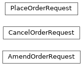

pyokx.okx_market_maker.order_management_service.model.OrderRequest
- class pyokx.okx_market_maker.order_management_service.model.OrderRequest.AmendOrderRequest(inst_id: str, order_id: str = '', client_order_id: str = '', req_id: str = '', cxl_on_fail: bool = False, new_size: str = '', new_price: str = '')[source]
Bases:
object- client_order_id: str = ''
- cxl_on_fail: bool = False
- inst_id: str
- new_price: str = ''
- new_size: str = ''
- order_id: str = ''
- req_id: str = ''
- class pyokx.okx_market_maker.order_management_service.model.OrderRequest.CancelOrderRequest(inst_id: str, order_id: str = '', client_order_id: str = '')[source]
Bases:
object- client_order_id: str = ''
- inst_id: str
- order_id: str = ''
- class pyokx.okx_market_maker.order_management_service.model.OrderRequest.PlaceOrderRequest(inst_id: str, td_mode: pyokx.okx_market_maker.utils.OkxEnum.TdMode, side: pyokx.okx_market_maker.utils.OkxEnum.OrderSide, ord_type: pyokx.okx_market_maker.utils.OkxEnum.OrderType, size: str, pos_side: pyokx.okx_market_maker.utils.OkxEnum.PosSide = None, price: str = '', client_order_id: str = '', tag: str = '', reduce_only: bool = False, tgt_ccy: str = '', ccy: str = '')[source]
Bases:
object- ccy: str = ''
- client_order_id: str = ''
- inst_id: str
- price: str = ''
- reduce_only: bool = False
- size: str
- tag: str = ''
- tgt_ccy: str = ''
